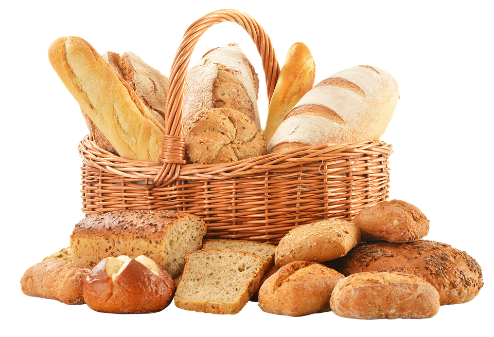
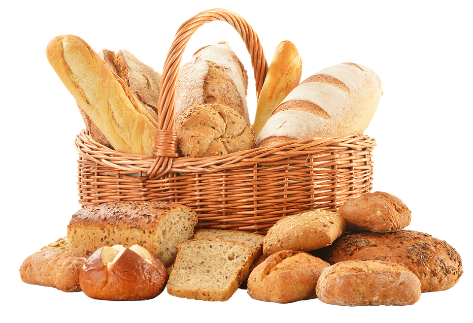
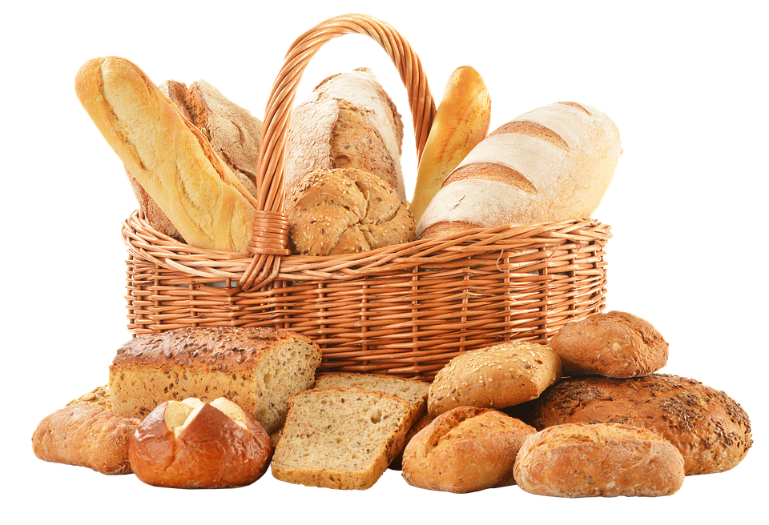
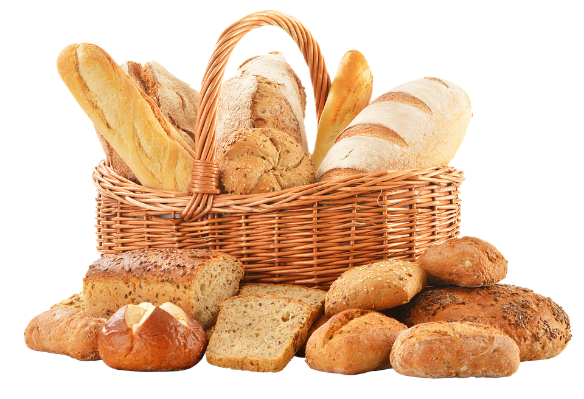

PADARIA

PADARIA MIGALHAS AMIGÁVEIS
 
PADARIA

PADARIA
Mergulhe no Doce Mundo da Nossa Pastelaria Artesanal
Na Nossa Pastelaria Artesanal damos-lhe as boas-vindas a um paraíso de doçura e criatividade, onde a paixão pela pastelaria se alia à precisão artesanal. Nossos mestres confeiteiros aperfeiçoaram a arte de criar delícias tentadoras que não apenas satisfazem o paladar, mas também cativam os olhos.
Ingredientes da mais alta qualidade
A excelência começa pelos ingredientes. Na Nossa Pastelaria selecionamos cuidadosamente ingredientes da mais alta qualidade para confecionar os nossos bolos. Utilizamos manteiga de alta qualidade, ovos frescos, chocolate belga e frutas da estação para garantir um sabor incomparável. Os nossos bolos são isentos de conservantes e aromas artificiais, para que possa desfrutar de um verdadeiro prazer culinário.
Sistema de fabricação de cerveja
Cada bolo é uma obra de arte comestível e é feito com o máximo cuidado. Nossos confeiteiros especialistas seguem um processo meticuloso que inclui preparar a massa ou o bolo do zero, criando recheios requintados e decoração artística. Na Nossa Pastelaria o detalhe é essencial: desde a textura perfeita dos pães de ló à elegante decoração de cada bolo, garantimos que os nossos produtos são uma delícia para todos os sentidos.


 Padaria
Padaria Doces
Doces Empanadas
Empanadas